Идея и структура сайта
Подумайте, из каких разделов будет состоять ваш сайт, в чём основная идея
и задача. Например, ваш заказчик — архитектурное бюро. На поверхности
понимание, что на сайте должны быть портфолио работ и контакты. Но мы
уточняем: чем бюро отличается от других? Оказывается, что бюро
специализируется на высотном строительстве. Делаем вывод, что недостаточно
просто хороших картинок с подписями, нужен текст — подробные описания
исходных данных, процесса, объяснения и обоснования решений. Также
понимаем, что проектов много, но показывать все необходимости нет.
Концентрируемся на самых масштабных. И еще момент, нужно сделать акцент на
команде, объяснить, почему они эксперты в своем деле. Не уходите в сторону
анимации, украшательств и спецэффектов, определите главную идею, суть —
что затронет посетителя эмоционально, что его впечатлит и вдохновит.
Иследование
Когда вы определились с идеей сайта и его структурой, посмотрите сайты
конкурентов и найдите хорошие решения. Оценивайте не то, как они выглядят,
а содержание: из чего состоит меню, что они вынесли на главную страницу,
какие разделы на сайте, что они пишут и как.
Содержание
На этапе дизайна объединяются все предыдущие стадии. Прототипы
оборачиваются в уникальный визуальный стиль и подход к коммуникации,
наполняются контентом, и продукт обретает свой финальный облик. Все работы
начинаются с главной страницы — она ключевая. Сначала приходит понимание,
как будет выглядеть главная страница, затем найденное визуальное решение
тиражируется на внутренние страницы. О том, как использовать законы
композиции в дизайне сайта, как работать с цветом и как применять
модульные сетки, читайте в лекциях: С заказчиком, как правило,
утверждается дизайн-решение главной страницы и двух-трех внутренних. После
того, как утверждена основная концепция, начинается проработка деталей:
рисуем иконки, заказываем фото и видеосъемку, корректируем тексты,
согласно дизайну.
Дизайн
На этапе дизайна объединяются все предыдущие стадии. Прототипы
оборачиваются в уникальный визуальный стиль и подход к коммуникации,
наполняются контентом, и продукт обретает свой финальный облик. Все работы
начинаются с главной страницы — она ключевая. Сначала приходит понимание,
как будет выглядеть главная страница, затем найденное визуальное решение
тиражируется на внутренние страницы. О том, как использовать законы
композиции в дизайне сайта, как работать с цветом и как применять
модульные сетки, читайте в лекциях: С заказчиком, как правило,
утверждается дизайн-решение главной страницы и двух-трех внутренних. После
того, как утверждена основная концепция, начинается проработка деталей:
рисуем иконки, заказываем фото и видеосъемку, корректируем тексты,
согласно дизайну.